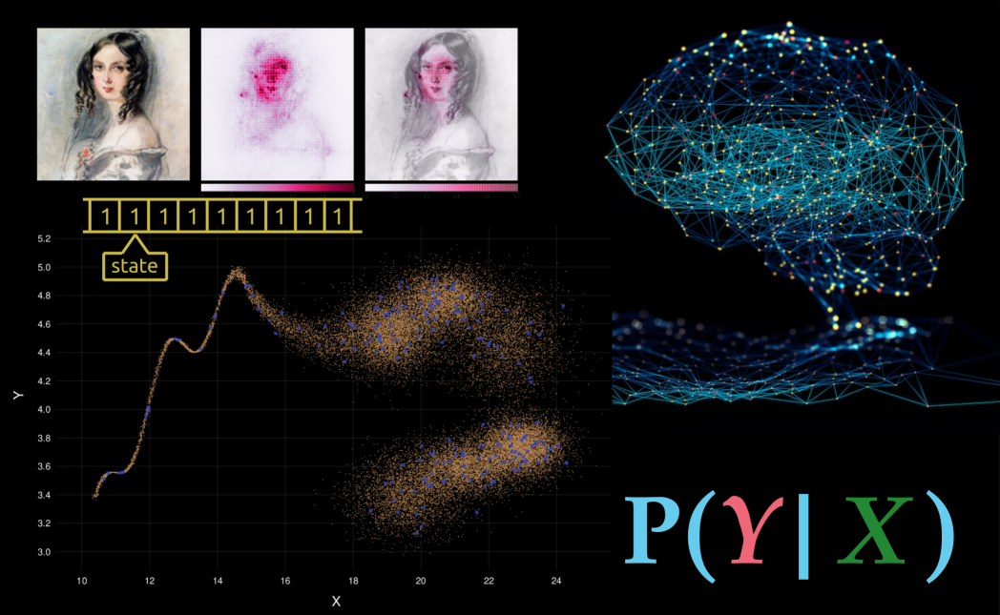

ADA511 0.1
Data science and data-driven engineering
Data science and data-driven engineering" class="quarto-cover-image img-fluid">
\[ \DeclarePairedDelimiters{\set}{\{}{\}} \]
Dear student
and aspiring data engineer
The goal of this course is not to help you learn how to tune the parameters of the latest kind of deep network, or how to efficiently handle large amounts of data, or how to do cross-validation in the fastest way, or what is the latest improvement in random-forest algorithms.
The goal of this course is to help you learn the principles to build the machine-learning algorithms and AI devices of the future. And, as a side effect, at the end of the course you’ll also be able to concretely improve present-day algorithms.
How can such a goal be achieved?
There is a small set of rules and one method that are mathematically guaranteed to output the optimal solution of any inference, prediction, classification, regression, and decision problem. You can think of this as the “unbeatable universal machine”. Or, from an AI point of view, you can think of these rules and method as the “laws of robotics” that should govern any ideal AI designed to draw inferences and make decisions.
\[ \begin{aligned} &\color[RGB]{68,119,170}\mathrm{P}(\lnot\mathsfit{Y}\nonscript\:\vert\nonscript\:\mathopen{}\mathsfit{X}) = 1 - \mathrm{P}(\mathsfit{Y}\nonscript\:\vert\nonscript\:\mathopen{}\mathsfit{X}) \\[0.5ex] &\color[RGB]{68,119,170}\mathrm{P}(\mathsfit{Z}\land\mathsfit{Y}\nonscript\:\vert\nonscript\:\mathopen{}\mathsfit{X}) = \mathrm{P}(\mathsfit{Z} \nonscript\:\vert\nonscript\:\mathopen{}\mathsfit{Y}\land\mathsfit{X})\cdot \mathrm{P}(\mathsfit{Y}\nonscript\:\vert\nonscript\:\mathopen{} \mathsfit{X}) \\[0.5ex] &\color[RGB]{68,119,170}\mathrm{P}(\mathsfit{Z}\lor\mathsfit{Y}\nonscript\:\vert\nonscript\:\mathopen{}\mathsfit{X}) = \mathrm{P}(\mathsfit{Z} \nonscript\:\vert\nonscript\:\mathopen{}\mathsfit{X}) + \mathrm{P}(\mathsfit{Y} \nonscript\:\vert\nonscript\:\mathopen{}\mathsfit{X}) - \mathrm{P}(\mathsfit{Z}\land\mathsfit{Y}\nonscript\:\vert\nonscript\:\mathopen{}\mathsfit{X}) \\[1ex] &\color[RGB]{34,136,51}\texttt{\small choose }\ \arg\max_{\mathsfit{D}} \mathrm{U}(\mathsfit{D} \nonscript\:\vert\nonscript\:\mathopen{} \mathsfit{Y}\land \mathsfit{X})\cdot \mathrm{P}(\mathsfit{Y} \nonscript\:\vert\nonscript\:\mathopen{} \mathsfit{D} \land\mathsfit{X}) \end{aligned} \]
These rules and method are quite easy to grasp and understand, but are computationally extremely expensive; the more so, the more data points and data dimensions we need to deal with. Current machine-learning algorithms, from deep networks to large language models (chatGPT), are all approximations to this ideal universal method; each one uses a different kind of approximation. The upside of these approximations is that they allow for much faster computations; their downside is that they give sub-optimal results.1
1 Is a suboptimality of, say, just 0.1% important? In a life-or-death situation for 1 000 000 people, 0.1% means 1000 more deaths.
Approximations evolve toward the maximally optimal ideal method. The approximations used at any given time in history exploit the computational technologies then available. Deep networks, for instance, would have been a useless approximation 50 years ago, before the introduction of Graphical Processing Units.
Every new technological advance opens up possibilities for new approximations that get us closer to the ideal optimum. To see and realize these possibilities, a data scientist needs at the very least:
- to know the exact, universal, maximally optimal method
- to think outside the box
Without the first requirement, how do you know what is the target to approximate towards, and how far you are from it? You risk: 1. making an approximation that leads to worse results than before; and 2. evaluating the approximation in the wrong way, so you don’t even realize it’s worse than before.
Without the second requirement you risk missing to take full advantage of the new technological possibilities. Consider the evolution of transportation: if you keep thinking in terms of how to improve a horse’s hoofs, you’ll never conceive a combustion engine; if you keep thinking in terms of how to improve combustion fuel, you’ll never conceive an electric motor. Existing approximations may of course be good starting points; but you need to clearly understand how they approximate the ideal optimum – so we’re back to the first requirement.
If you want to make advances in machine learning and AI, you must know how the ideal universal algorithm looks like, and you must not limit yourself to thinking of “training sets”, “test sets”, “cross-validation”, “supervised learning”, “models”, and similar notions. In this course you’ll see for yourself that such notions are anchored to the present-day box of approximations.
And we want to think outside that box.
But don’t worry: this course does not only want to prepare you for the future. With the knowledge and insights acquired, you will be able to propose and implement concrete improvements to present-day methods as well.
Your role, course bugs & features
This course is still in an experimental, “alpha” version. So you will not only learn something from it (hopefully), but also test it together with us, and help improving it for future students. Thank you for this in advance!
For this reason it’s good to clarify some goals and guidelines of this course:
- Light maths requirements
-
We believe that the fundamental rules and methods can be understood and also used (at least in not too complex applications) without complex mathematics. Indeed the basic laws of inference and decision-making involve only the four basic operations \(+ - \times /\). So this course only requires maths of a beginning first-year undergraduate level.
- Names don’t constitute knowledge
-
In these course notes you’ll often stumble upon terms in blue bold and definitions in blue Italics. This typographic emphasis does not mean that those terms and definitions should be memorized: it means there are important ideas around there that you must try to understand and use. In fact we don’t care which terminology you adopt. Instead of the term statistical population, feel free to use the term pink apple if you like, as long you explain the terms you use by means of a discussion and examples.2 What’s important is that you know, can recognize and can correctly use the ideas behind technical terms.
Memorizing terms, definitions, and where to use them, is how large language models (like chatGPT) operate. If your study is just memorization of terms, you’ll have difficulties finding jobs in the future, because there will be algorithms that can do that better and at a cheaper cost than you.2 Some standard technical terms are no better. The common term random variable, for instance, often denotes something that is actually not “random” and not variable. Go figure. Using the term green banana would be less misleading!
- Diverse textbooks
-
This course does not have only one textbook: it refers to and merges together parts from several books and articles. You will notice that most of these works adopt quite different terminologies, employ different symbolic notations, and give different definitions for similar ideas.
These differences and contrasts are a feature, not a bug!
You might think that this makes studying more difficult; but it actually helps you to really understand an idea and acquire real knowledge, because it forces you to go beyond words, symbols, and specific examples. This connects with the previous point, “names don’t constitute knowledge”. The present course notes will help you build comprehension bridges across those books.
- Artificial intelligence
-
In order to grasp and use the fundamental laws of inference and decision-making, we shall use notions that are also at the foundations of Artificial Intelligence (and less common in present-day machine learning). So you’ll also get a light introduction to AI for free. Indeed, a textbook that we’ll draw frequently from is Russell & Norvig’s Artificial Intelligence: A Modern Approach (we’ll avoid part V on machine learning, which is really poorly explained and written).